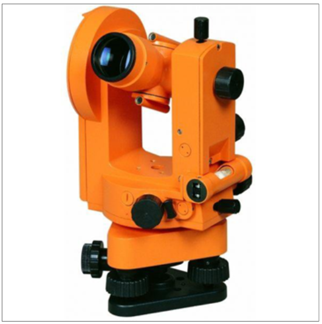
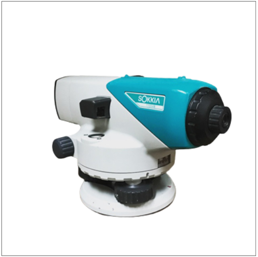
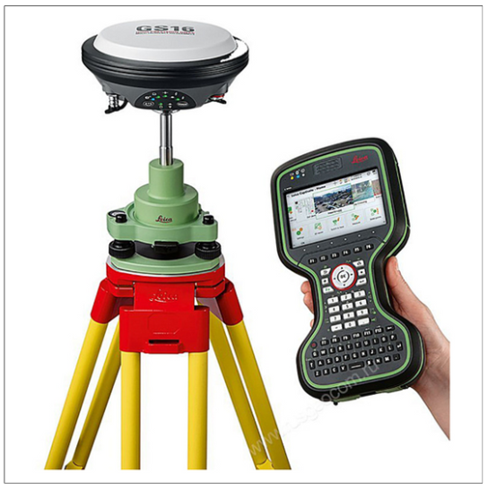
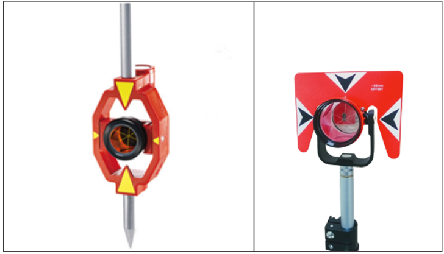

Знакомимся с основным геодезическим оборудованием
Андрей, на этом уроке мы познакомимся с основными геодезическими приборами, разберем их назначение, принцип работы, а также поймем, на какие документы стоит обратить внимание в самом начале работ.

Основное оборудование
Теодолит
Это самый распространенный измерительный прибор для определения горизонтальных и вертикальных углов. Применяется в геодезических, маркшейдерских и строительных работах. С его помощью можно построить угол любой величины (например, 90 градусов для построения угла стены) или измерить угол наклона здания или сооружения.

Теодолиты бывают электронные и оптические. В наше время теодолитом пользуются достаточно редко, хотя для знания и понимания основ построения осей в натуре это лучший инструмент.
Нивелир
Это прибор, с помощью которого можно определить разность высот между точками. Его используют строители при переносе высотной отметки, указанию единой высоты конструкции (например бетонной плиты), а также совместно с расчетом наклона при контроле уклона коммуникаций или контроле уклона при работах на благоустройстве.

Нивелир считается незаменимым прибором при всех видах строительных работ. Считается, что им нужно уметь пользоваться всем: от мастера до начальника участка. Понимание принципа работы нивелира не раз выручало стройку в самый ответственный момент.
При выставлении единой высоты закладных деталей под монтаж ферм купольного перекрытия, нивелир показал более точный результат даже перед современными электронными приборами!
Тахеометр
Это измерительный прибор, с помощью которого можно получить полное описание местности или конструкции. Он измеряет расстояния, углы, высотные положения, то есть совмещает в себе функции теодолита и нивелира с компьютерной обработкой данных.

GPS-приемник
Это оборудование для получения данных при выполнении кадастровых и геодезических работ. Такой приемник позволяет сократить время работы специалиста и упрощает выполнение изысканий. Он отлично подойдет при линейном строительстве, но не при работах на площадочных объектах (недостаточно точности).

Принцип работы GPS-приемника – прием планово-высотного положения с нескольких спутников, работающих в системе GPS или ГЛОНАСС. Скорость приема сигнала и точность зависит от количества принимаемых сигналов.
Давайте закрепим пройденный материал по основному оборудованию. Посмотрите на изображение ниже и определите название оборудования.
Вспомогательное оборудование
Нивелирная рейка
Это инструмент, который применяется для измерения превышений с помощью нивелира. Изготавливается из алюминия или дерева. На видео ниже я покажу вам, как выглядит нивелирная рейка.
Теперь посмотрите основные правила работы с нивелирной рейкой.
Призма (отражатель) и минипризма
Это инструменты, которые используются для проведения измерений тахеометром. Они дают максимальную точность измерений.

Давайте закрепим пройденный материал по вспомогательному оборудованию. Посмотрите на изображение ниже и определите название инструмента.
Штатив
Это универсальный инструмент для любого оборудования. Давайте посмотрим видео, в котором я расскажу, какие бывают штативы, и в чем их назначение.
Алюминиевый штативидеально подходит для нивелира, а деревянный и пластико-деревянный подойдет для тахеометра, теодолита и электронного теодолита.
Не будем терять времени, давайте сразу научимся правильно ставить штатив.
Секрет геодезиста: если вы устанавливаете штатив зимой и светит солнце, после установки прибора в рабочее положение легко прикопайте ножки штатива снегом. Зачем? Ножки штатива могут немного нагреться от солнца и совсем немного растопить снег, прибор собьется с уровня и вам придется устанавливать его заново. Снег на ножках штатива не даст солнечным лучам нагреть снег у основания, прибор более долгое время останется в рабочем положении.
Мы познакомились с основным оборудованием для геодезиста. Теперь мы умеем их между собой различать, знаем назначение каждого, и даже научились пользоваться вспомогательным оборудованием.
Лучший тахеометр – это теодолит, а нивелир – это вода.
Перед тем как перейти в следующий урок, попробуйте включить смекалку и ответить на вопрос ниже, а после выбранного ответа вы получите краткую историческую справку.